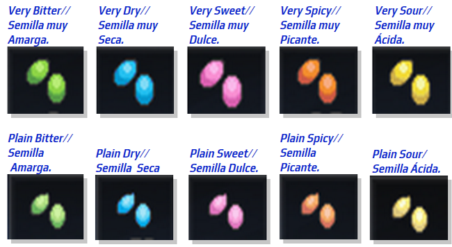
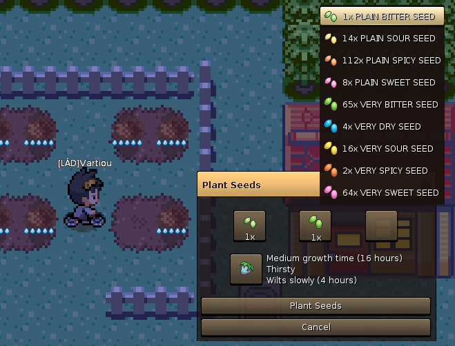
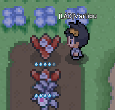

La Hacienda de Bayas te da la bienvenida!
Esta es una pequeña guia para ayudarte a aprender que son las bayas, sus usos y como cultivarlas para que puedas convertirte en un excelente granjero de bayas!
Las bayas son items que pueden variar en uso y en efectos dentro y/o fuera de un duelo. Dependiendo de la baya, los pokémon pueden utilizarlas por su cuenta dentro de una batalla siempre y cuando estén sosteniendo una baya.
¡Sin más demora comenzemos!
Requisitos Antes de Iniciar
En Pokémmo puedes crear cualquier tipo de baya haciendo la combinación adecuada de cualquiera de estas 10 semillas: Amarga, Muy Amarga, Seca, Muy seca, Dulce, Muy dulce, Picosa, Muy picosa, Acida y Muy Acida.
Materiales
Aparte de las semillas antes mencionadas, necesitas conseguir "Herramientas de Extracción" y el "Cubo Wailmer" de la tienda de flores en Hoenn.

Ubicaciones donde conseguir semillas.
Las semillas se obtienen de las bayas extrayendolas con una "Herramienta de Extracción".
En Kanto, las bayas se pueden encontrar en ciertas grietas en el pasto en toda la region. En Hoenn, las bayas se encuentran en un suelo café por algunas rutas.
De igual forma se pueden encontrar aleatoriamente después de una batalla con un pokémon salvaje o por medio de un pokémon con la habilidad de recogida (Pickup).
Plantar
Solo puedes plantar bayas en la Región de Hoenn. Para plantar solo necesitas presionar "Z" en un espacio de suelo café y seleccionar las semillas que vas a plantar. Diferentes combinaciones de semilla dan difrentes bayas.
Regar
Al momento de plantar las semillas, aparecerá un indicador de agua en forma de gotas. Puedes regar la planta si tiene dos o menos gotas en el indicador de agua.
Si la riegas cuando tiene tres o más gotas, la planta se inundara, causandole daño o hasta la muerte.
Si el indicador desaparece, significa que el agua se ha agotado. Si la planta no es regada después de 6 horas de haber agotado su agua, existe una alta probabilidad de que muera.
Es recomendable revisar tus plantas cada 6-8 horas.
Cosechar
El tiempo en que tarda en crecer y la cantidad de bayas que obtienes depende de la baya que siembres y el cuidado que le haz dado a la planta durante su crecimiento.
Diferentes bayas tardan distintos tiempos y dan cantidades diferentes de fruto.

Tipos de Baya Efectos y Combinaciones
| # | Baya | Árbol | Nombre | Inglés | Efecto | Combinacion | Tiempo
|
|---|---|---|---|---|---|---|---|
| 01 | | | Baya Zreza | Cheri Berry | Cura la parálisis | x3 Picante | 16hrs |
| 02 | | | Baya Atania | Chesto Berry | Despierta al Pokémon | x3 Seca | |
| 03 | | | Baya Meloc | Pecha Berry | Cura el envenenamiento | x3 Dulce | |
| 04 | | | Baya Safre | Rawst Berry | Cura las quemaduras | x3 Amarga | |
| 05 | | | Baya Perasi | Aspear Berry | Cura el congelamiento | x3 Ácida | |
| 06 | | | Baya Zanama | Leppa Berry | Restaura 10 PP | Amarga + Dulce + Muy Picante | 22hrs |
| 07 | | | Baya Aranja | Oran Berry | Restaura 10 PS | Seca + Amarga + Ácida | 12hrs |
| 08 | | | Baya Caquic | Persim Berry | Cura la confusión | Seca + Picante + Dulce | |
| 09 | | | Baya Ziuela | Lum Berry | Cura cualquier problema de estado | Muy Seca + Muy Picante + Muy Dulce | 46hrs |
| 10 | | | Baya Zidra | Sitrus Berry | Restaura 30 PS | Muy Dulce + Muy Acida + Muy Amarga | 32hrs |
| 11 | | | Baya Higog | Figy Berry | Restaura 1/8 de los PS pero confunde si al Pokémon no le gusta el sabor picante | x2 Picante + Muy Picante | |
| 12 | | | Baya Wiki | Wiki Berry | Restaura 1/8 de los PS pero confunde si al Pokémon no le gusta el sabor seco | x2 Muy Seca | |
| 13 | | | Baya Ango | Mago Berry | Restaura 1/8 de los PS pero confunde si al Pokémon no le gusta el sabor dulce | x2 Muy Dulce | |
| 14 | | | Baya Guaya | Aguav Berry | Restaura 1/8 de los PS pero confunde si al Pokémon no le gusta el sabor amargo | x2 Muy Amarga | |
| 15 | | | Baya Pabaya | Iapapa Berry | Restaura 1/8 de los PS pero confunde si al Pokémon no le gusta el sabor ácido | x2 Muy Ácida | |
| 16 | | | Baya Frambu | Razz Berry | Sirve para hacer Pokécubos | Muy Picante + Seca | 12hrs |
| 17 | | | Baya Oram | Bluk Berry | x2 Dulce + Seca | ||
| 18 | | | Baya Latano | Nanab Berry | x2 Dulce + Amarga | ||
| 19 | | | Baya Peragu | Wepear Berry | x2 Ácida + Muy Amarga | ||
| 20 | | | Baya Pinia | Pinap Berry | x2 Ácida + Picante | ||
| 21 | | | Baya Grana | Pomeg Berry | Hace que el Pokémon sea amistoso, pero baja 10 EV's en PS | Muy Picante + Amarga + Picante | 36hrs |
| 22 | | | Baya Algama | Kelpsy Berry | Hace que el Pokémon sea amistoso, pero baja 10 EV´s de Ataque | Muy Seca + Ácida + Seca | |
| 23 | | | Baya Ispero | Qualot Berry | Hace que el Pokémon sea amistoso, pero baja 10 EV's de Defensa. | Muy Dulce + Picante + Dulce | |
| 24 | | | Baya Meluce | Hondew Berry | Hace que el Pokémon sea amistoso, pero baja 10 EV's de Ataque Especial. | Muy Amarga + Seca + Amarga | |
| 25 | | | Baya Uvav | Grepa Berry | Hace que el Pokémon sea amistoso, pero baja 10 Ev's de Defensa Especial. | Muy Ácida + Dulce + Ácida | |
| 26 | | | Baya Tamate | Tamato Berry | Hace que el Pokémon sea amistoso, pero baja 10 Ev's de Velocidad. | Muy Picante + Seca + Picante | |
| 27 | | | Baya Mais | Cornn Berry | Sirve para hacer Pokécubos | Muy Seca + Dulce + Seca | 22hrs |
| 28 | | | Baya Aostan | Magost Berry | Muy Dulce + Amarga + Dulce | ||
| 29 | | | Baya Rautan | Rabuta Berry | Muy Amarga + Ácida + Amarga | ||
| 30 | | | Baya Monli | Nomel Berry | Muy Ácida + Muy Picante + Ácida | ||
| 31 | | | Baya Wikano | Spelon Berry | x2 Muy Picante + Seca | 70hrs | |
| 32 | | | Baya Plama | Pamtre Berry | x2 Muy Seca + Dulce | ||
| 33 | | | Baya Sambia | Watmel Berry | x2 Muy Dulce + Amarga | ||
| 34 | | | Baya Rudion | Durin Berry | x2 Muy Amarga + Ácida | ||
| 35 | | | Baya Andano | Belue Berry | Muy Ácida + Picante + Ácida | ||
| 36 | | | Baya Lichi | Liechi Berry | Aumenta el Ataque cuando los PS están por debajo de 1/3 | Muy Picante + Muy Dulce + Seca | |
| 37 | | | Baya Gonlan | Ganlon Berry | Aumenta la Def. cuando los PS están por debajo de 1/3 | Muy Seca + Dulce + Muy Amarga | |
| 38 | | | Baya Aslac | Salac Berry | Aumenta la Vel. cuando los PS están por debajo de 1/3 | Muy Dulce + Amarga + Muy Ácida | |
| 39 | | | Baya Yapati | Petaya Berry | Aumenta el AtEsp. cuando los PS están por debajo de 1/3 | Muy Picante + Ácida + Muy Amarga | |
| 40 | | | Baya Aricoc | Apicot Berry | Aumenta la DefEsp. cuando los PS están por debajo de 1/3 | Muy Seca + Picante + Muy Ácida | |
| 41 | | | Baya Zonlan | Lansat Berry | Aumenta la posibilidad de dar un golpe crítico cuando los PS están por debajo de 1/3 | Muy Picante + Muy Dulce + Muy Ácida | |
| 42 | | | Baya Arabol | Starf Berry | Aumenta aleatoriamente un stat cuando los PS están por debajo de 1/3 | Muy Seca + Muy Dulce + Muy Amarga |